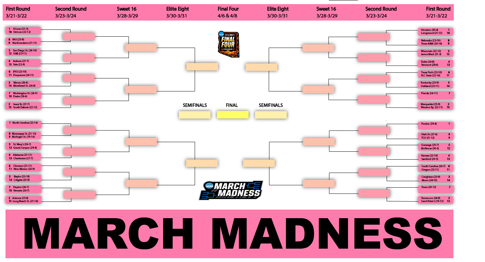

I grew up in Farmington Hills, Michigan. Outside of class, I'm usually planning my next trip or hunting
down somewhere new to eat! I'll try almost anything once, and I bring that same sense of adventure to my work.
If you ask my friends and they'd say I'm funny, spontaneous, and caring.
Information Science paired with a business minor puts me right where technology meets AI and
decisions it's built for, which is exactly the space I want to work in.
Experience
Digital Transformation Intern, H.W. Kaufman Group
Supported enterprise Salesforce migration and technical roadmap initiatives for a global specialty insurance group
assisting with implementation and enhancement of underwriting and policy workflows.
Performed QA testing across insurance products, rates, and policy forms, validating 100+ rating formulas and eligibility
requirements; logged and triaged 40+ defects in Jira and Confluence within Agile sprint cycles.
Researched and presented to executive leadership on the growth of telehealth and its implications for specialty
insurance underwriting, risk exposure, and product design
Research Assistant, Michigan State University
to
Labeled and preprocessed large image datasets in Roboflow, keeping them accurate and consistent for machine learning workflows.
Trained and fine-tuned object detection models to identify pigs across different environments and lighting conditions.
Secretary and Advocacy Chair, UNICEF at Michigan State University
to present
Lead advocacy campaigns and volunteer efforts that promote UNICEF's mission, and build partnerships that grow donations and visibility.
Coordinate meetings and keep communication flowing between teams so every meeting hits its goals.
It's where my caring side and my spontaneous side get to team up.
Team Member, Dairy Queen
to
Served a wide range of customers, adjusting how I communicated to fit different ages and preferences.
Resolved customer concerns by listening for what they actually needed.
Suggested small changes to store layout and operations that helped things run smoother during rush hours.
Toolkit
Languages
Python, JavaScript, C++, HTML, CSS
Design
Figma, FigJam, Adobe Creative Cloud
Platforms and tools
Salesforce, Roboflow, Flask, React, Chrome DevTools, Git and GitHub
Certifications
Ethics in AI, Prompt Design in Vertex AI, Google Analytics for Business, Adobe Creative Cloud
Relevant coursework
Web Design in Media Settings, Practical Computing for Interactive Media, IT Network Management
When I'm not working:
Traveling somewhere new
Finding the best food wherever I land
Saying yes to any adventure
Projects
Things I've built or studied, and what each one taught me.
Mobile-friendly e-commerce redesign
A mobile-first redesign of an e-commerce site, built from real user research. I analyzed survey data to
find user pain points, turned the findings into personas and journey maps, and designed wireframes and
interactive prototypes in Figma.
Tools: Figma, FigJam, Miro and Lucidchart, with a React, Node.js, and Stripe API build
Result: I worked with developers to turn the designs into a working site that matched the prototypes.
Website ad-revenue forecasting
A Python model that predicts a website's ad revenue from its traffic patterns and user engagement, plus a
time series forecast of where revenue is headed.
Tools: Python, Pandas, NumPy, Scikit-learn, Selenium, Google Analytics API
Result: engineering features like CTR, bounce rate, and session duration improved the model's accuracy.
Extra: an interactive Flask dashboard that visualizes the predictions with Matplotlib, Seaborn, and Plotly.
MSU FAQ AI chatbot
An AI-powered chatbot that answers common questions about MSU automatically, connected to a web interface
I built with HTML, CSS, and JavaScript.
Result: asynchronous API requests cut the dashboard's response time.
2024 March Madness bracket

Every first-round matchup, seed, and record on one page.
A printable bracket for the 2024 NCAA men's tournament, designed in an Adobe class. It lays out all
64 first-round teams with their seeds and records, the dates for each round, and empty slots to fill in
winners all the way to the final in Phoenix.
Contact
I'm looking for opportunities in tech and consulting, and I'm always happy to trade travel or food
recommendations. Reach out anytime.